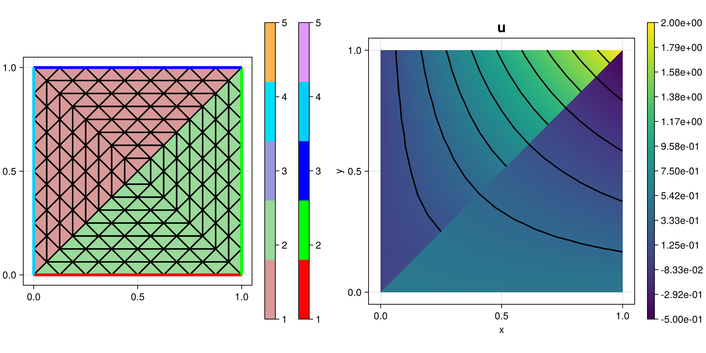

281 : Discontinuous Plot
This example demonstrates how to plot a discontinuous function on a grid with two regions by region-wise nodal values and plotting.
The computed solution for the default parameters looks like this:

module Example281_DiscontinuousPlot
using ExtendableFEMBase
using ExtendableGrids
using GridVisualize
# function to interpolate
function u!(result, qpinfo)
x = qpinfo.x
if qpinfo.region == 1
result[1] = 2*x[1]*x[2]
elseif qpinfo.region == 2
result[1] = -1*x[2]*x[1] + 0.5
else
@error "function was evaluated without region information"
end
end
# everything is wrapped in a main function
function main(; broken = false, nrefs = 3, abs = false, Plotter = nothing)
# generate two grids
xgrid = grid_unitsquare(Triangle2D)
# mark first two triangles to be in second region
xgrid[CellRegions][1:2] .= 2
# refine
xgrid = uniform_refine(xgrid, nrefs)
# generate coressponding finite element spaces and FEVectors
FES = FESpace{L2P1{1}}(xgrid; broken = broken)
FEFunction = FEVector(FES)
# interpolate function onto first grid
interpolate!(FEFunction[1], u!; bonus_quadorder = 2)
# get subgrid for each region
subgrid1 = subgrid(xgrid, [1])
subgrid2 = subgrid(xgrid, [2])
# get parent nodes for each subgrid
subnodes1 = subgrid1[NodeParents]
subnodes2 = subgrid2[NodeParents]
# compute nodevalues for nodes of each subgrid
nodevals4nodes1 = nodevalues(FEFunction[1], Identity; abs = abs, regions = [1], nodes = subnodes1)
nodevals4nodes2 = nodevalues(FEFunction[1], Identity; abs = abs, regions = [2], nodes = subnodes2)
# plot
p = GridVisualizer(; Plotter = Plotter, layout = (2, 2), clear = true, resolution = (1000, 500))
gridplot!(p[1,1], xgrid)
scalarplot!(p[1, 2], [subgrid1, subgrid2], xgrid, [view(nodevals4nodes1,:), view(nodevals4nodes2,:)], cellwise = false, levels = 11, title = "u")
return p
end
function generateplots(dir = pwd(); Plotter = nothing, kwargs...)
plt = main(; Plotter = Plotter, kwargs...)
scene = GridVisualize.reveal(plt)
GridVisualize.save(joinpath(dir, "example281.png"), scene; Plotter = Plotter)
end
endThis page was generated using Literate.jl.